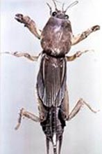
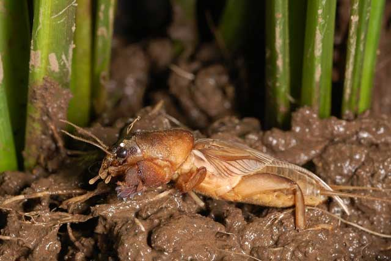

Mole cricket 
Gryllotalpa orientalis Burmeister
What it does
Mole crickets feed on seeds, tillers in mature plants, and roots. They can cut plants at the base resulting to loss of plant stand.
Why and where it occurs
Mole crickets occur in all types of rice environment. They are more common in non-flooded upland fields with moist soil.
In flooded rice fields, mole crickets are usually seen swimming in the water. They are also found in permanent burrows or foraging-galleries in levees or field borders. The entrances to burrows in the soil are marked by heaps of soil.
The nymphs feed on roots and damage the crops in patches.
How to identify
Check for the presence of insect and feeding damage, including:
- loss of plant stand
- cut seedlings at base
- poor growth of seedlings
- dead seedlings
- missing plants
- damaged roots
Damage symptoms are similar to ant damage, specifically loss of plant stand and missing plants. To confirm mole cricket infestation, check for presence of tan nymphs in tunnels on soil near the roots.
Why is it important
Mole crickets are polyphagous. They feed on the underground parts of almost all-upland crops. They occasionally become sufficiently abundant to cause heavy damage to roots and basal parts of rice plants growing in raised nursery beds or upland conditions. In wetland rice, infestation occurs when there is no standing water.
How to manage
To prevent mole cricket infestation:
- Use resistant varieties (modern varieties with long and dense fibrous can tolerate damage better). Contact your local agriculture office for an up-to-date list of available varieties.
- Flood rice fields for for 3-4 days, level the field for better water control
- Avoid construction of a raised nursery to reduce feeding damage on seedlings
- During land preparation, collect the nymphs and adults
To control mole cricket infestation:
- Maintain standing water
- Encourage biological control agents: sphecid wasp, carabid beetle, nematodes, and fungus; mole crickets eat each other when they are together because of their cannibalistic behavior
- Poison insects by baits made by mixing moistened rice bran and insecticide and placing it along rice bunds or drier areas of the field
-
Content expert: Jo Catindig (email: j.catindig@irri.org) and Bryce Blackman (email: b.blackman@irri.orgp).
Disclaimer: All information are taken from http://www.knowledgebank.irri.org/